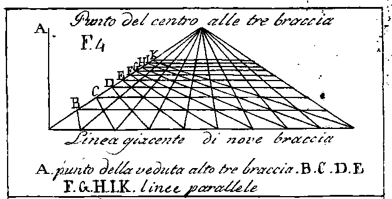
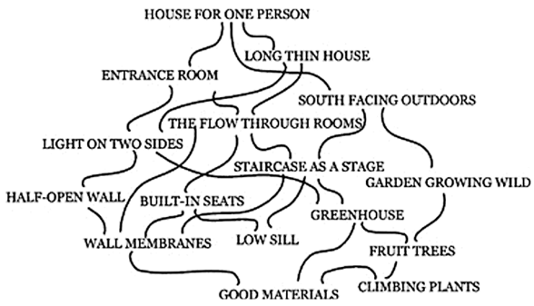
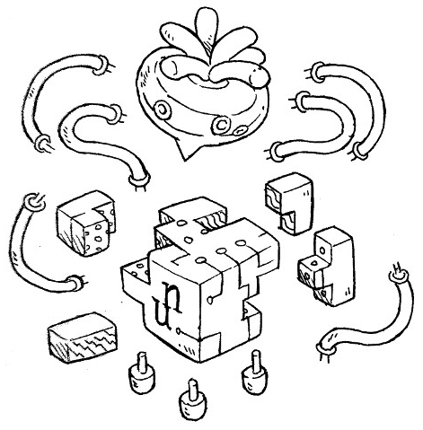

A personal computer
What are computers for, anyway?
I think of a computer as a lens through which I can observe and listen to the natural world. Some mathematicians are of the opinion that the doing of mathematics is closer to discovery than invention. Mathematical beauty is the aesthetic pleasure derived from the abstractness, or orderliness of mathematics. Similarly to how one might enjoy spending time studying venation patterns, we can imagine a device to explore procedural music and parametric illustration.
A romantic vision of the luddite, potentially emancipating, power of computing was promptly smothered by military drones, surveillance hardware and the advertisement machinery. Suffice to say, that nowadays, to most of my friends, computing evokes either encroaching social networks or the drudgery of data entry.
Perhaps I'm making it more difficult than necessary by using the term personal computer, and not finding a more apt word to describe what I have in mind.
I. Personal
Let's consider the whole enterprise of designing and documenting this fictional computer to be a sort of model that others could adapt to their own designs, a call to encourage individuals to conjure up their own vision of a computing machine, tailored to suit their own needs; And Varvara, a demonstration of the potential of personal computing systems, and not as a platform that should be adopted and adapted to fit broader computing needs.
The purpose of this document is not to gather would be users, but instead review potential portable computing skills that are not platform-specific, and to serve as a reminder that the key to permaculture's resilience is achieved through a diversification of methods.
I am certain that making something unique by way of customization is necessary for care, for when the unique breaks, we might mend. I often think back on how, in the movie Hackers(1995), each character had their own laptop launch sequence reflecting their aesthetics. — A far cry from today's disposable laptops, each equally adorned of proprietary services stickers.
For mending to even be envisaged, one must be able to generally understand that which needs to be mended; a venture which, thanks to the ever complexifying stack upon which modern computing is built, will have you promptly laughed out of the room. But just for the sake of this article, the required understanding of a system shall end at its bytecode bedrock.

A side-effect of working from within unique computing environments is that looking for generic solutions is often more impractical than solving the problem head on. By that, I mean by that the solution needs to be adapted to the specifics of the virtual system, and this in turn develops understanding and care.
II. Computer
The computer in this case is the sum of potential I/O communications with the underlying virtual machine. In this case, the VM can communicate with up to 16 devices at once, but has no knowledge of what a screen or a keyboard might be, these devices are what make up the computer.
Uxn is to Varvara, what the 6502 is to the Classic Nintendo.
When it came time to find out how I might want to interact with this computer, I started with a terminal, it seemed as good a place as any to start off from, by terminal I mean a console to send and receive bytes of data. The terminal communication allows me to leverage the power of the host OS to further develop the system.
As the system begins to take shape, I consider that possibly someday I may lose my sight, or the use of my hands, or I may become deaf. I wonder how I might replace one device for another in the future, and how I might adapt each device to my changing needs. I leave some blank spaces to be filled at a later time, should I need them.